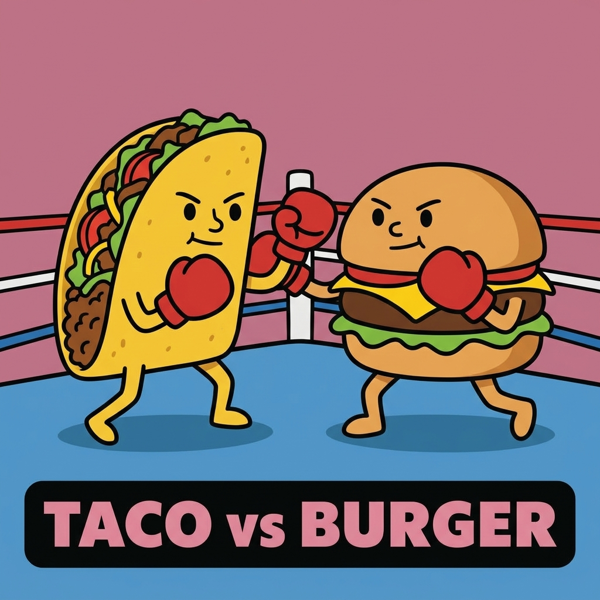
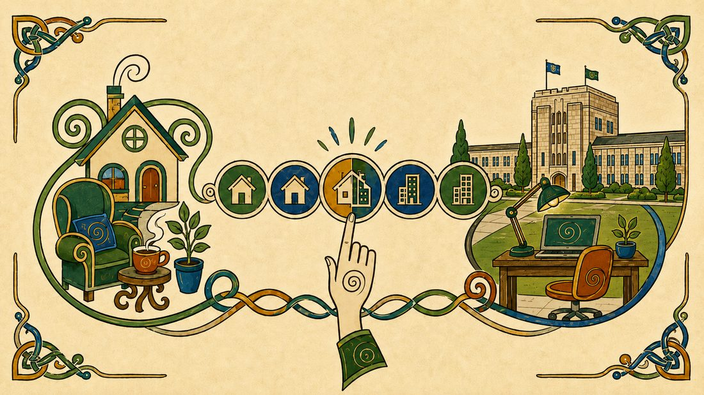
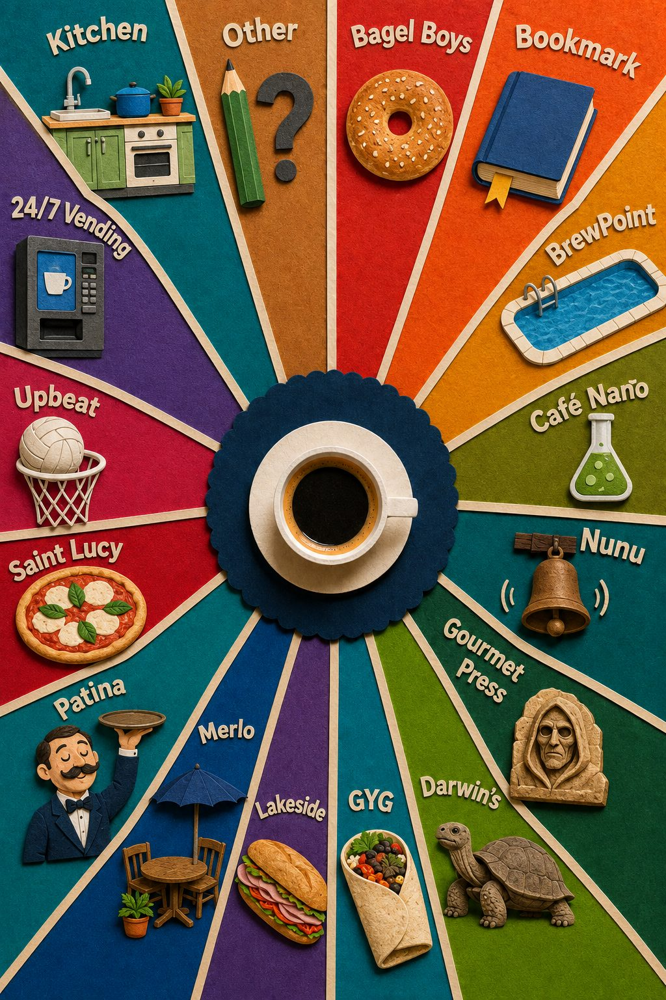
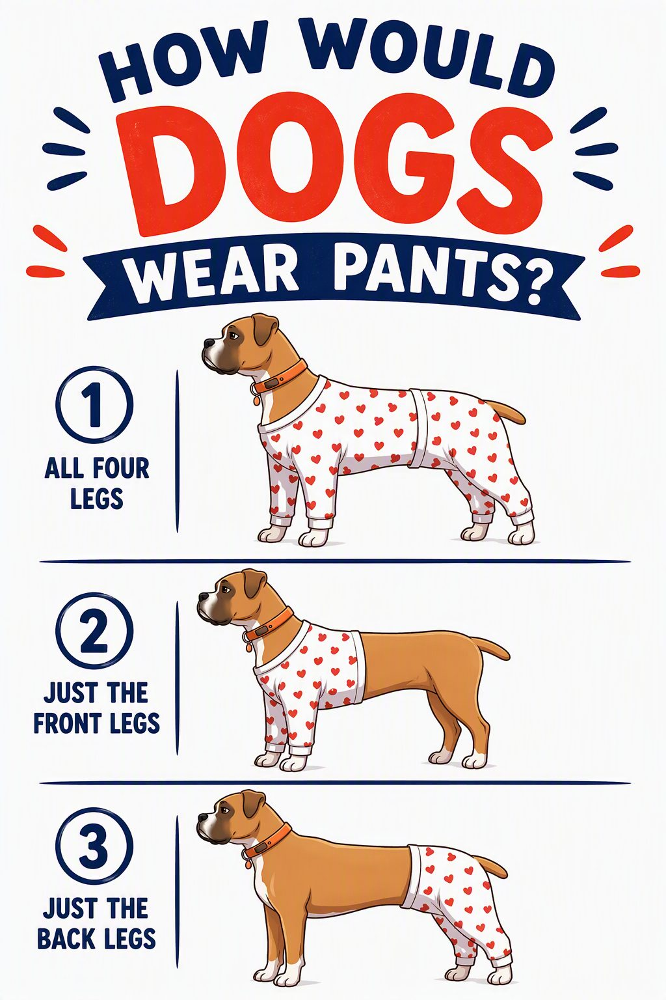
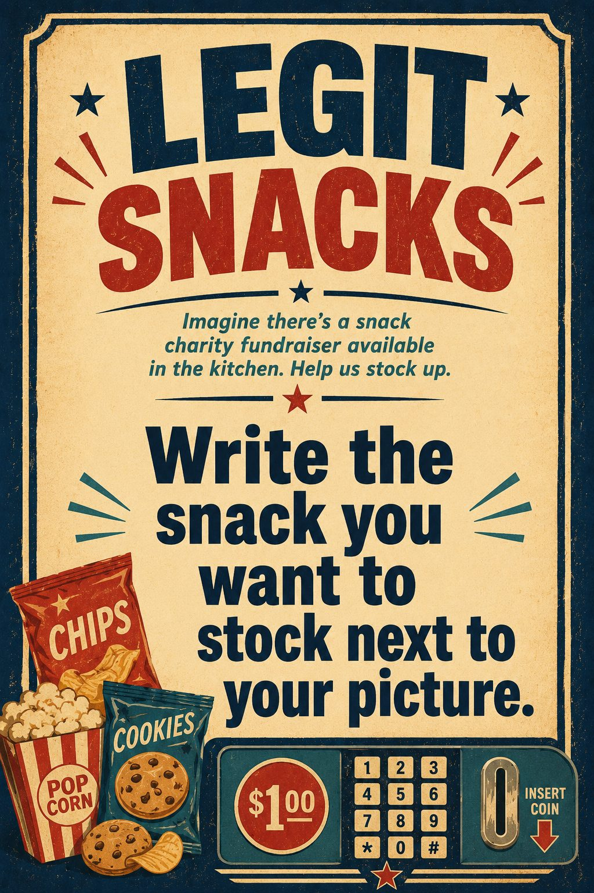
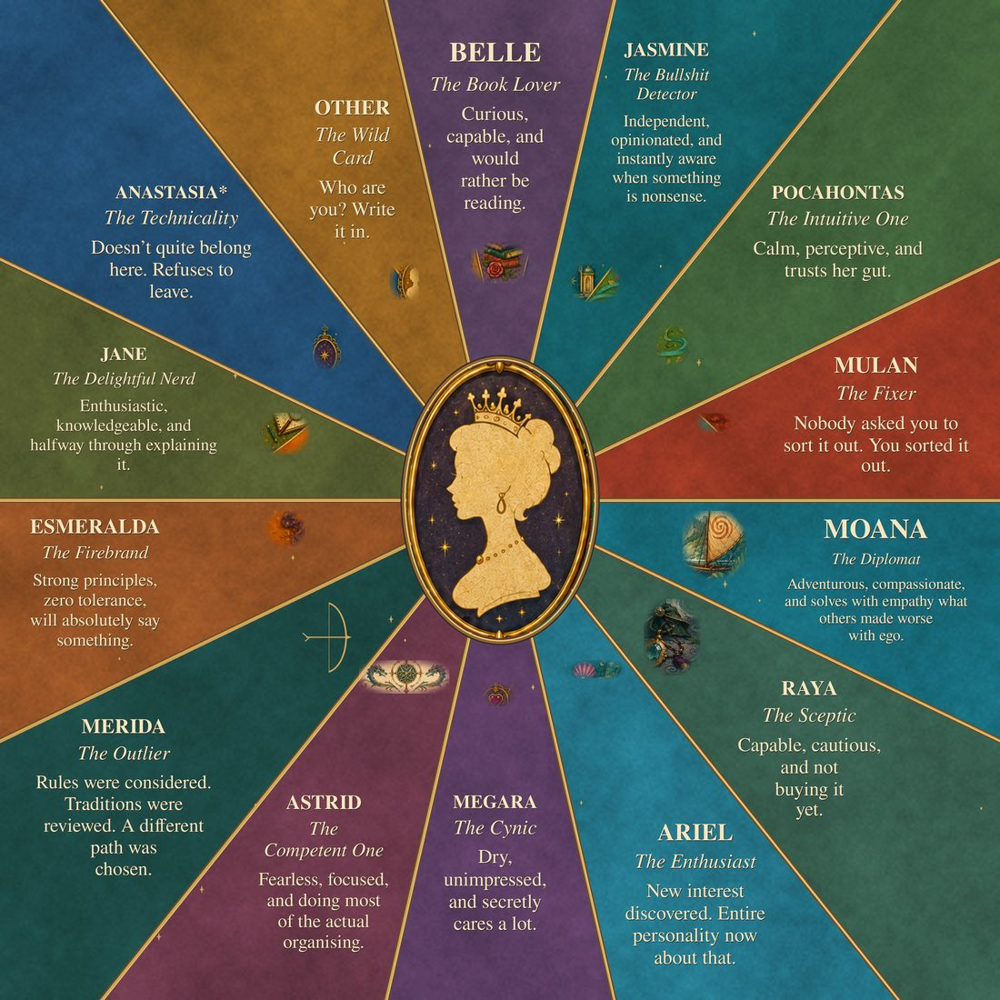
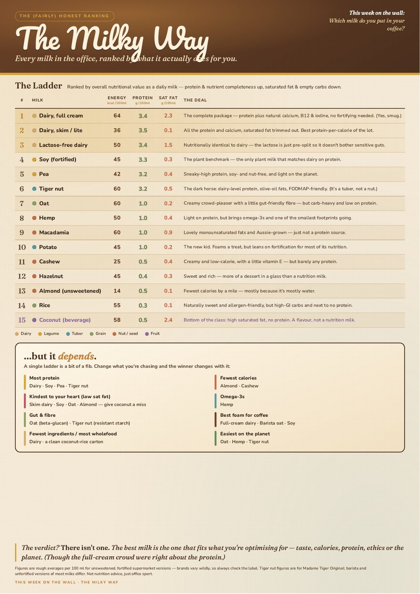
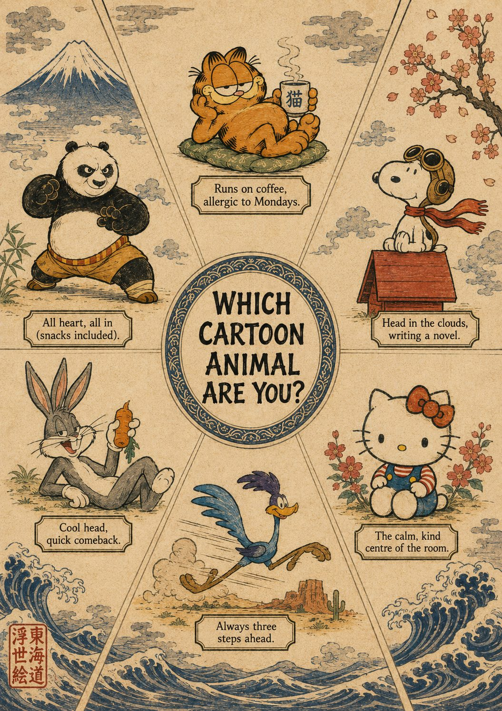

Top tier
The serious infrastructure. If one of these breaks, someone needs to know today.
infrastructure ATLAS Assessment redesign and the team's AoL companion. Rubric builder, coverage, desktop analysis.
- Link
- ATLAS (live app) · About ATLAS on teach.business
- Access
- Sign in with a UQBS LD account (the
uqbsldtier). Every LD on the team has one. Academics get their own tier when an LD enrols them from the hub. - Ask
- Michael Lin for anything Azure, accounts or deploys. Ree Jordan for the research and ethics side. The project mailbox is atlas.project@uq.edu.au; every team member has access and can add it to Outlook.
ATLAS (AI Transformation and Learning Assessment System) started as a Teaching Innovation Grant project for redesigning open assessment so that students still do the cognitive work when AI can produce the artefact. It reads a course's profile, produces a desktop analysis, and walks an academic and their LD through a redesign. Since September it is also the team's AoL companion: it holds a copy of the AoL register, shows every UQBS course's AoL position, and gives program-level coverage.
The toolkit on the hub is the part LDs use day to day, outside any course overhaul:
- Rubric builder. A GA rubric for any assessment in any UQBS course, built from the official 2026 AoL trait descriptors and rewritten into task-specific language.
- AoL coverage. Where each GA is measured across a program or major, straight from the register, with the gaps. The register link and an upload button sit at the top, so the download-save-reupload loop is a two-minute job.
- Desktop analysis. A read of any course's assessment suite: what AI can do to each task, Bloom's and SOLO levels, and where the course sits against the 60% secure target.
- Ask ATLAS. A guide that explains where you are and what each screen wants. It points; it does not do the work.
Where it runs
ATLAS runs on an Azure App Service under Sean's personal subscription while ITS finishes the migration to UQ infrastructure. The notify flow (a Teams card and an email to learningdesign@ when an academic saves a brief) and the register push (every time the workbook is saved) both run as Power Automate flows on Sean's account. If either stops, Michael is the person with the keys.
data Course profiles Every UQBS course profile as JSON, scraped nightly, with a viewer and the AoL feed.
- Link
- Course profiles site · the repo · UQ Course Profiles page on teach.business
- Access
- Public. The repo is in the UQ-Business-School GitHub org; team members with org access can edit.
- Ask
- Michael Lin. Report errors to learningdesign@business.uq.edu.au.
Every UQBS course profile as structured JSON, one file per course, with assessment items, learning outcomes, AI categories and the LO-to-assessment mapping. A scraper keeps it current. The viewer on top of it is quicker and more useful than the official profile pages when you need to compare courses or pull an assessment list, and it is what ATLAS reads for its course feed. The AoL feed on the same site carries course, GA, item, status and rubric link for every register row (names and notes stay in the workbook).
It is not an official UQ source, and the site says so. Program workbooks for curriculum review (MBus, MCom and friends) are built from the same data with build_program.py in the repo.
the master The AoL register The accreditation master on SharePoint. One row per course per GA.
- Link
- UQBS-AoL-Register.xlsx · the 4. AoL folder (evidence, rubrics, notes, one folder per course)
- Access
- The Curriculum Uplift SharePoint. Everyone on the LD team has it.
- Ask
- The whole LD team owns it now. Chelsea Jarvis holds the curriculum uplift job while Sean is away.
The accreditation master: one row per course per GA, with the assessment item it is measured on, the status, the named LD, and a link to the rubric. Nine statuses, from Identified through Rubric in development, Approved not installed, Awaiting LD check and Partial mapping to Active. The Courses sheet is the taxonomy (programs, majors, cores) and drives the lookups, so add a course code there first.
Two habits keep it healthy. Edit it in Excel or in the browser, never by script, because the validations, conditional formatting and table part are fragile. And treat "Awaiting LD check" as a request to a named person: the row does nothing until someone opens the rubric and confirms all three traits are there.
Every save pushes to ATLAS within a few minutes, so the coverage view is never more than one save behind.
Cool projects
Tools, standards and experiments the team can pick up and use.
downloads Claude skills Six UQ skills for Claude: rubrics, Word, PowerPoint, icons, Blackboard and teach.business HTML.
- Link
- Downloads below
- Access
- Anyone. Install into your own Claude account.
- Ask
- Michael Lin, or improve them yourself and share the new file.
A skill is a folder of instructions (and any templates it needs) that Claude reads when the task matches. These six carry the UQ and UQBS house rules so you do not have to. To install one: in Claude, open Settings, turn on code execution under Capabilities if it is off, then go to Customise, Skills, and upload the .skill file. It is active in every new chat from then on.
ga-rubric-integration
Builds and revises rubrics with the Graduate Attribute criteria folded in, using the official 2026 AoL trait descriptors and the "smush" method. The rule set behind every GA rubric the team has shipped.
uq-document-formatting
Word documents on the real UQ .dotx templates (all eight), so reports, briefs, guides and memos inherit the actual styles, header art and footers.
uq-powerpoint-template
Slide decks on the official UQ PowerPoint template: the masters, the six-level text system, the colour and chart palette, and the standing slides.
uq-icons
Keyline icons from the team's Noun Project seats, recoloured to UQ purple, inserted into PowerPoint as SVG or emitted as accessible inline SVG for HTML.
uqbs-blackboard-html
On-brand, accessible HTML fragments for the Add HTML block in Ultra, including tabs, flashcards, self-checks and copy blocks.
uqbs-teach-business-html
Complete standalone pages for teach.business.uq.edu.au: masthead, hero, footer, the shared stylesheet, and only the official components.
browser tools Blackboard bookmarklets Blackboard Map, the content inventory, and the Instructor-to-TA button. Drag to your bookmarks bar.
- Link
- Blackboard Map · Content inventory (find your HTML) v7 · Instructor to TA
- Access
- Anyone with a Blackboard login. Each runs in your own signed-in browser and talks only to learn.uq.edu.au. No AI, no server, nothing leaves your machine.
- Ask
- Vera Iushina for the inventory tool (v7 builds on her v6). Michael Lin for the others.
Open a page, drag the yellow button to your bookmarks bar, then click it on any Blackboard page.
- Blackboard Map walks every item in the courses you choose, including what is embedded inside each Ultra document, and saves a course map as HTML, a manifest as JSON and a spreadsheet as CSV. Built for the AoL rubric sweep; useful any time you need to know what is actually in a course.
- Content inventory lists every HTML block, H5P and tool link in a course so you can find the thing you need to edit. Version 7 finds embedded H5P from the console copy too and tells H5P on the course page apart from H5P inside a document.
- Instructor to TA exists because the Blackboard team asked Educational Designers to hold long-term access as Teaching Assistant rather than Instructor, since Instructors are now copied forward into future course sites. It lists every course where you are an Instructor with a tick box; one button downgrades the ticked courses to TA, the other unenrols you. Only your own enrolment is touched, and nothing changes until you confirm. This is the one tool of the three that writes to Blackboard.
builder Drop The in-house Rise replacement. Build from blocks, copy for Blackboard, or export SCORM.
- Link
- Open Drop
- Access
- Anyone. No sign-in. Your work autosaves in your own browser; Save writes it to a .json file and Open brings it back on any machine.
- Ask
- Michael Lin.
The team's in-house replacement for Rise. Build a module from blocks (text, callouts, images, video, documents, accordions, tabs, flashcards, self-checks), preview it, then "Copy for Blackboard" to get the on-brand HTML for an Add HTML block, or export a fragment or a SCORM package. It imports existing Rise exports so old modules can be rebuilt without starting again.
What changed in this version: Drop used to sit on Azure behind a password because it pushed images to GitHub in the background. That feature is gone, so the password is gone with it and Drop is a plain static page. Images you add go into the media basket; download the publish zip and put its media folder wherever your Media base URL (in Settings) points, such as a teach.business folder or the course's own file area.
standard The teach.business HTML standard One house style for Blackboard Ultra and teach.business pages, and the prompt that writes it.
- Link
- On-brand HTML in Blackboard Ultra · the web standard · Disclosing AI use
- Access
- Public pages. The source lives in UQ-Business-School/courses, which mirrors to teach.business.uq.edu.au/ld/.
- Ask
- Anyone on the team who has pushed to the courses repo. Michael Lin for the mirror.
Two surfaces, one house style. For Blackboard Ultra, a CSS-only pattern for the Add HTML block that survives the sanitiser, with the callouts, cards, accordions and tabs, plus the prompt that gets a language model to write it correctly. For full pages on teach.business, a skeleton that links the shared uqbs.css and uqbs.js from /ld/uqbs/ and uses only the official components, including the flashcards, self-check quiz and copy block. This page is built on it.
The two skills below (uqbs-blackboard-html and uqbs-teach-business-html) are the same standard packaged for Claude, so the output is right without pasting the rules in every time.
explainer NotABot An AI writing coach for international students. Explainer and slides, no link.
- Link
- The 2026 AALL presentation (PDF). No link to the live tool from here; it is a student-facing research instrument.
- Access
- Students in the courses that run it. Staff access by arrangement.
- Ask
- Andy Sankey.
An AI writing coach for international students in a postgraduate management course, built on the Claude API and embedded in Blackboard. It does not write for the student and it does not mark; it reads a draft against the task and the student's own goals and coaches, on Andy Sankey's six pedagogical principles. It has run under ethics approval since Semester 1 2026, with a two-survey study around it, and the S1 reception figures are in the deck. It is the case study in the team's 2026 BEL award nomination and in the book chapter on AI at the Business School.
explainer HOSP7053 Touchstones Structured reflection conversations through HOSP7053. Explainer only.
- Link
- None from here. Student-facing, inside the course.
- Access
- HOSP7053 students and teaching staff.
- Ask
- Michael Lin for the app. Asha Worsteling and David Solnet own the pedagogy.
A series of short, structured self-reflection conversations that run through the semester in Service Leadership in Hospitality. Each Touchstone sits on a scenario and walks a student through Asha's five lenses (behaviour, literature, impact, blindspot, judgement), with an AI partner that asks rather than tells. Staff have named logins to read the reflections. A digitised emotional intelligence self-assessment sits alongside it for Week 7, and by design nothing in the platform scores or aggregates those results.
2027 BBOP and P.A.T. The AI tutor, coming back as part of ATLAS. Not this semester.
- Status
- Future project, not quite ready. TBD 2027.
- Ask
- Michael Lin.
BBOP is the AI tutor that ran in BISM1201 and MGTS7619; P.A.T. is its repackaging as a set of tutor conversations placed throughout a Blackboard course. Both come from the same codebase as NotABot and the Touchstones. The plan is a self-service, multi-tenant tutor platform that folds into ATLAS, so an academic who has redesigned a course with ATLAS can switch on a tutor for it without a build. Not this semester.
dark academia Grotesque Quest A dark academia scavenger hunt around the Great Court grotesques.
- Status
- Ran in the BBusMan first-year program. Materials are with the course team.
- Ask
- Gemma Irving.
A team scavenger hunt around the grotesques of the Great Court for first-year students, dressed in dark academia: parchment role cards, ink-line maps, a leaderboard fed from Google Forms. The mechanic is positive interdependence in the Johnson and Johnson sense. Each of the four roles on a team holds information the others need, so the interdependence is felt rather than explained and the debrief writes itself. It doubles as a response to the campus-disconnection problem by making the sandstone something students look at closely.
Purely LD team fun
Morale, ducks and a whiteboard.
whiteboard Question of the week The whiteboard, the questions so far, the hub posters, and the prompts to make the next one.
- Where
- The big whiteboard in the LD pod
- Access
- Walk up to it
- Ask
- Whoever put up the last question. That is the whole succession plan.
An A4 hub image goes in the middle of the whiteboard, wedges get drawn out from it, and everyone sticks their avatar in the wedge that answers the question. It works because the question forces a choice: fixed options cluster, open questions scatter. If someone suggests an open question ("what cartoon animal would you be?"), turn it into six named options and it will work.
Each week's hub gets a different visual style. Questions so far, roughly in order:
- Burgers or tacos (the first one)
- Your ideal work-from-home and work-from-office spread
- Best coffee on campus
- How would a dog wear pants
- Legit snacks
- Which Disney princess are you
- What milk goes in your coffee
- Which cartoon animal are you (Garfield, Snoopy, Hello Kitty, Road Runner, Bugs Bunny, Po)
- What should Sean name his baby (Sean's last one)
- What should Trish's grandchild call her
The hubs so far
Each week a different style. Click one to open it full size.


Taco vs burger (the first one)

WFH or WFO spread

Best coffee on campus

How would dogs wear pants

Legit snacks

Which Disney princess

Milk week: the companion ranking

Which cartoon animalPrompt for the hub image
This is the shape that has worked. Swap in the question, the options and this week's style. Text rendering in current image models is good enough to put the captions in the picture.
read it
Create a portrait A4 (vertical) poster in the style of [THIS WEEK'S STYLE, e.g. traditional Japanese ukiyo-e woodblock print / cosy 16-bit pixel art / 1950s travel poster / medieval illuminated manuscript], designed to sit in the centre of a whiteboard as the hub of a "which one are you?" chart. OVERALL LOOK: [three or four sentences that pin down the style: line quality, palette, paper or surface texture, period motifs for the border and background.] TITLE in a decorative cartouche across the top, in clear English lettering styled to suit the print: "[THE QUESTION IN CAPITALS]" Below the title, arrange [NUMBER] options around a central round medallion (evenly spaced at clock positions), each drawn in the same style and sitting in its own segment divided by thin radiating lines: 1. [Option one, with two or three visual details] 2. [Option two] 3. [Option three] 4. [Option four] 5. [Option five] 6. [Option six] Under each option, a small caption panel with the option's name and a short personality hook, e.g. "[Option one]: [hook]". Keep the dividing lines light so they guide hand-drawn wedges without dominating. Leave a little empty space in each segment so a printed staff avatar can be stuck there later. No photorealism, no 3D, no text other than the title and the captions.
Prompt for a staff avatar
Every person on the board has a small printed avatar in one house style. New starters need one before they can vote. Attach two images to the image tool: a photo of the person, and the style reference (any existing avatar from the set). If the photo is a tight head shot, tell the tool to zoom out so the proportions match a normal profile picture, shoulders and upper torso.

read it
Create a square staff profile avatar using the supplied staff photograph for the person's likeness and the supplied illustrated team avatar as the STRICT STYLE REFERENCE. The finished image must look like it belongs to exactly the same existing set. Do not reinterpret, modernise or add realism to the style. PERSON Name: [FIRST NAME] Use the photograph only to determine the person's recognisable features: hairstyle, hair colour, face shape, glasses, facial hair, skin tone, clothing and other obvious distinguishing features. ILLUSTRATION STYLE * simple flat editorial/cartoon portrait * bold, clean dark-brown/near-black outlines * simplified geometric facial features * small simple oval/dot eyes * simple eyebrows and nose drawn with minimal lines * friendly simplified mouth * hair represented as clean flat illustrated shapes rather than individual realistic strands * facial hair, if present, must also be simplified into clean cartoon shapes, never realistic beard hairs or detailed stubble * very limited shading: broad flat areas only * subtle warm paper/grain texture is acceptable * no photorealism * no 3D rendering * no glossy digital-art effects * no exaggerated caricature Preserve distinctive accessories shown in the photograph, such as glasses. Glasses should sit naturally below the eyebrow line, leaving the eyebrows clearly visible above them. COMPOSITION * exactly 1:1 square * head-and-upper-torso portrait * person centred * head comfortably clear of the top edge * shoulders/body continue behind the nameplate * simple solid coloured background * no scenery, objects or extra decoration NAMEPLATE Across the lower portion of the image, add the same wide black rounded-rectangle nameplate used in the reference set. Write exactly: [FIRST NAME IN UPPERCASE] Use very large, bold, condensed sans-serif uppercase lettering. Centre the name horizontally and vertically inside the black bar. Choose the lettering colour to coordinate strongly with the background colour. The nameplate must sit in the same low position and proportions as the supplied team reference. Do not move it upwards into the middle of the torso. COLOUR Give this person their own strong background colour that works with their clothing and is distinct from the other staff avatars. Keep the overall palette warm, slightly muted and harmonious with the existing set. CRITICAL The supplied illustrated avatar is the house style. Match its line weight, facial simplification, proportions, texture, nameplate design and overall visual language as closely as possible. The photograph controls the person's likeness; the illustrated reference controls everything about how they are drawn.
the flock Who's That Duck 26 colleagues as ducks in the Great Court, and a kit to make your own.
- Link
- The team wall · Make your own duck (kit) · duck-template.png
- Access
- Anyone. The wall is now a frozen snapshot: no joining, no editing.
- Ask
- Nobody needs to. New ducks are self-serve with the kit.

The get-to-know-you activity that started all of this. Twenty survey questions, a model writes an image prompt from the answers, an image model renders you as a duck in the Great Court, and every duck lands on the wall with a short bio. The app that ran it is retired. The wall stays as it was on the day the app came down.
Want a duck? The kit is the whole workflow in one file: paste it into Claude or ChatGPT, answer the questions, take the prompt it gives you to an image tool with the template attached, and generate at 3:2. Ten minutes.
Who to ask
One table. Who holds what while Sean is away.
| For | Ask |
|---|---|
| Anything on Azure: ATLAS, the Touchstone app, deploys, app settings, the Power Automate flows | Michael Lin |
| Anything AoL: the register, statuses, rubrics, coverage, the sweep evidence | The whole LD team; Chelsea Jarvis holds the curriculum uplift job |
| NotABot | Andy Sankey |
| Course profiles site and repo | Michael Lin; errors to learningdesign@business.uq.edu.au |
| The HTML standard, the skills, Drop, the bookmarklets, this page | Michael Lin, or fix it and push |
| Question of the week | Whoever did the last one |
| Ducks | The kit above |